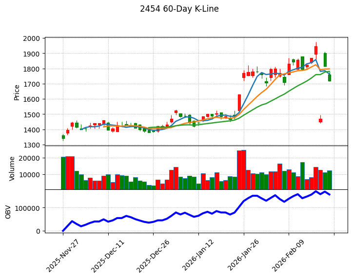
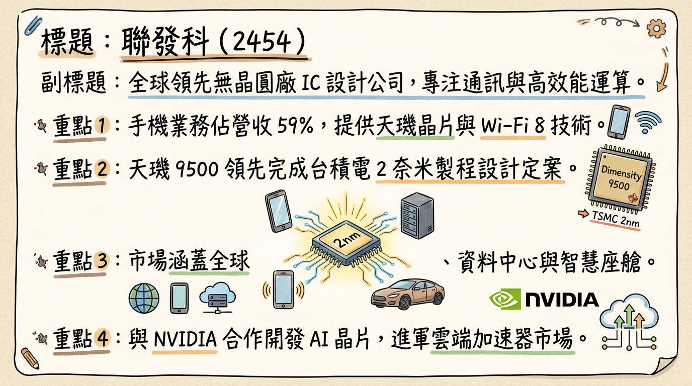
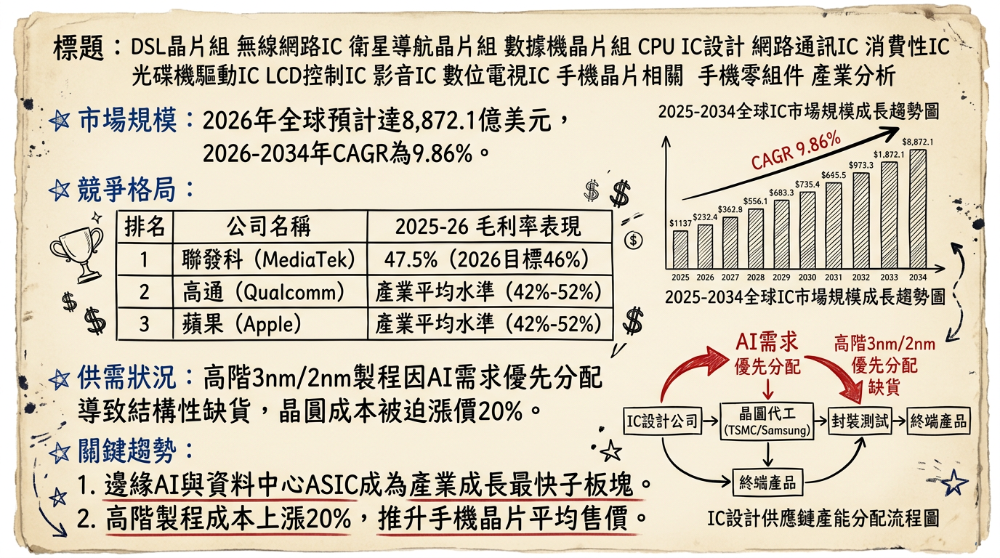
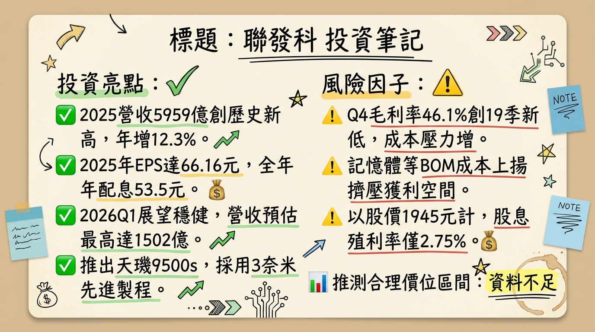

聯發科正由手機晶片龍頭轉型為「全球 AI 運算平台」，雖短期面臨記憶體成本擠壓毛利，但雲端 ASIC 突破 10 億美元與 AI PC 專案量產，將帶動 2026 年後的股價估值重估（Re-rating）。

聯發科為全球領先的無晶圓廠 IC 設計公司（Fabless），產品橫跨手機、網通、高效能運算與車用電子。目前核心戰略為「多引擎成長」，降低對單一手機市場的依賴。
業務產品線營收結構 (依 2025 Q4 財報)| 業務板塊 | 營收佔比 | 核心產品 / 品牌 | 關鍵技術進展 |
|---|---|---|---|
| 手機業務 (Mobile) | 59% | 天璣 (Dimensity) 系列 | 天璣 9500 (2nm 定案)、天璣 9500s |
| 智慧裝置平台 (Smart Edge) | 37% | Filogic (Wi-Fi 7/8)、平板、TV | Wi-Fi 8 (Filogic 8000)、AI PC 晶片 |
| 電源管理 (PMIC) 及其他 | 4% | 電源管理 IC、車用晶片 | Dimensity Auto、GB10 運算專案 |
聯發科 2025 年營收創高，但 2026 年初受季節性因素與 BOM 成本壓力出現下滑。
| 月份 | 營收金額 (億新台幣) | 月增率 (MoM) | 年增率 (YoY) |
|---|---|---|---|
| 2026/01 | 469.77 | -8.37% | -8.15% |
| 2025/12 | 512.66 | +9.32% | +22.99% |
| 2025/11 | 468.96 | -9.80% | +3.60% |
| 2025/10 | 520.26 | +16.5% | +1.8% |
| 2025/09 | 446.63 | +7.6% | -4.0% |
| 2025/08 | 415.28 | -9.0% | -1.7% |
| 券商名稱 | 報告日期 | 目標價 (TWD) | 2026 預估 EPS | 評等變動 / 重點 |
|---|---|---|---|---|
| 富邦投顧 | 2026/01/27 | 2,100 | 62.46 元 | 看好 2027 年 ASIC 爆發，EPS 挑戰 110 元 |
| 摩根士丹利 | 2026/01/27 | 2,088 | 62.57 元 | 估值基準移至 2027 年 Google TPU 專案 |
| Factset (共識) | 2026/02/05 | 1,962.5 | 65.05 元 | 反映 2026 年轉型期的謹慎樂觀 |
| 群益證券 | 2026/01/26 | 1,925 | 77.99 元 | 預期 AI 手機滲透率超預期，給予較高 EPS |
| 季度 | 毛利率 (%) | 營業利益率 (%) | 每股純益 (EPS) |
|---|---|---|---|
| 2025 Q4 | 46.1% | 14.5% | 14.39 元 |
| 2025 Q3 | 46.5% | 15.6% | 15.84 元 |
| 2025 Q2 | 49.1% | 19.5% | 17.50 元 |
| 2025 Q1 | 48.8% | 18.1% | 18.43 元 |
| 排名 | 公司 | 市佔率 (出貨量) | 核心競爭優勢 |
|---|---|---|---|
| 1 | 聯發科 | 36-38% | 中低階統治力、天璣 9500 具高性價比 |
| 2 | 高通 | 25-27% | 旗艦機專利優勢、自研 Oryon CPU |
| 3 | 蘋果 | 18-20% | 封閉生態系、A19 系列垂直整合 |
| 股票代號 | 公司 | 2025 營收 (億) | 2025 毛利率 | 2025 EPS |
|---|---|---|---|---|
| 2454 聯發科 | 聯發科 | 5,959.7 | 47.5% | 66.16 |
| 2379 瑞昱 | 瑞昱 | 1,227.1 | 50.0% | 28.77 |
| 3034 聯詠 | 聯詠 | 1,006.6 | 37.7% | 26.87 |
* 2026/03：斥資 29 億元入股 Ayar Labs，佈局 1.6T 算力 CPO 矽光子技術。
* 2026/05 (預計)：與 NVIDIA 合作之 AI PC 晶片 (N1) 正式量產。
* 地緣政治風險及匯率波動 (台幣升值預期)。
2. AI PC 晶片開啟全新市場 (TAM)，估計 2026 年底出貨量顯著提升。
2. 手機換機潮不如預期： 若 AI Agent 應用未能在 2026 年形成剛需，手機部門營收將停滯。
本報告由 AI 自動產生，資料來源為公開網路資訊，僅供參考，不構成投資建議。
產生時間：2026-03-04 07:55


